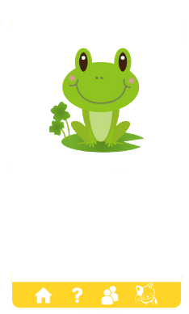
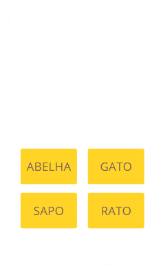
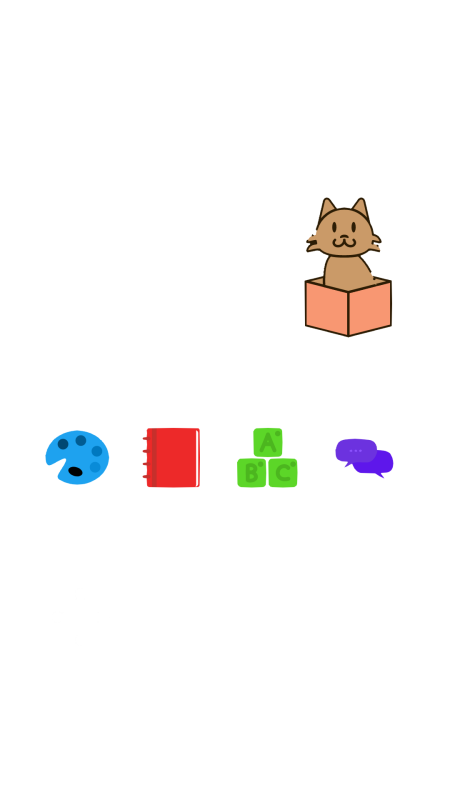
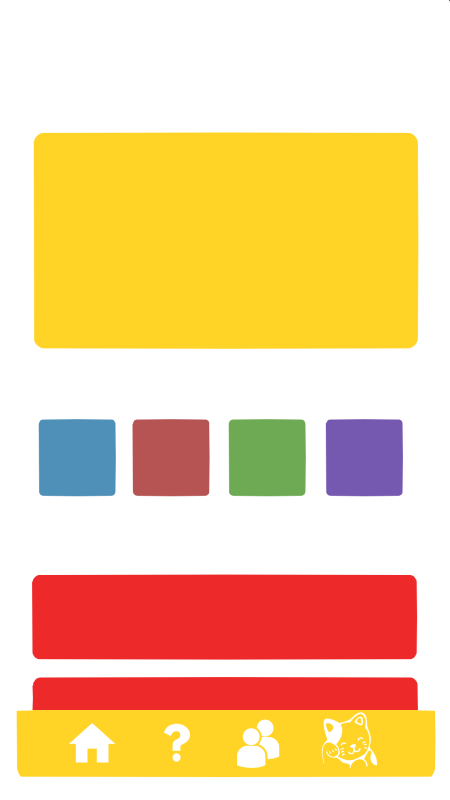

Consiste em um conjunto de jogos educacionais
simples para crianças com TEA (Transtorno do Espectro Autista),
onde ajudarão no desenvolvimento da criança, promovendo o
aumento do raciocínio e auxílio no processo de alfabetização.
Crianças com TEA possuem dificuldade comunicativa e o processo
de aprendizagem é diferente, portanto é importante darmos a
devida atenção para que ela se desenvolva corretamente.


Metodologia
A Análise do Comportamento Aplicada (Terapia ABA) apresenta grandes evidências
científicas para o ensino de habilidades, redução e/ou prevenção de comportamentos disruptivos e
desenvolvimento de diferentes áreas (emocional, social, linguagem,cognitiva, autonomia...)
em pessoas com Transtornos do Desenvolvimento e Transtornos do Espectro do Autismo(TEA), sendo
a terapia com maiores evidências científicas para este público.
O aplicativo apresenta espaços de aprendizado, onde lá a criança obterá conhecimentos utilizados durante os jogos,
nesta parte do aplicativo, é essencial que os pais ou responsáveis da criança participem, já que possuem um papel importante no aprendizado.
Nelas, estão disponíveis imagens e sons, que ajudarão no aprendizado da criança, fortalecenco sua memória.
Jogos
O aplicativo é baseado nessa metodologia, trabalhando diferentes áreas do desenvolvimento humano para ajudar no processo de
aprendizado da criança. Nos jogos de coordenação motora, os reflexos são trabalhados a partir da assimilação dos movimentos na tela. Nos jogos
que fazem uso de lógica, a atenção da criança se coloca em prova, tendo que montar um quebra-cabeça. Nos jogos que trabalham
com a alfaetização, imagens, nomes e sons compõem o jogo, fazendo com que a criança aprenda o nome dos animais e seus sons respectivos.


Alfabetização
A alfabetização é a base para uma educação construtiva, o qual ajuda as pessoas a desenvolver a
leitura, a escrita, a comunicação, as ideias e os pensamentos, o letramento utiliza a escrita para resolver problemas
do dia a dia, facilitando assim suas práticas sociais podendo produzir gêneros textuais.
Lógica
A alfabetização é a base para uma educação construtiva, o qual ajuda as pessoas a desenvolver a
leitura, a escrita, a comunicação, as ideias e os pensamentos, o letramento utiliza a escrita para resolver problemas
do dia a dia, facilitando assim suas práticas sociais podendo produzir gêneros textuais.
Coordenação Motora
O desenvolvimento motor é fundamental em nossas ações cotidianas, é o que nos permite
locomover e realizar ações que fazem parte da nossa rotina. As habilidades motoras são o que permite à criança correr,
brincar, pular e realizar qualquer atividade relacionada ao impulso físico e ao equilíbrio.
Social
A interação social traz benefícios para a criança como a troca de linguagens,
experiências e culturas; e a criação de princípios e valores como o respeito, a generosidade e a colaboração.
A vida em sociedade é importante não apenas para construção de conhecimentos, mas também para o desenvolvimento
individual de cada um.
Atenção!
O aplicativo está desenvolvimento, portanto algumas inconsistencias podem aparecer.
Informamos também, que o arquivo disponibilizado para download não possui vírus, é apenas uma mensagem padrão do android
para informar dos possíveis riscos de instalar apks disponíveis na internet.